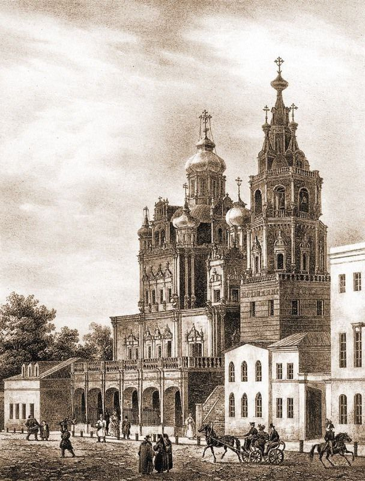

Басманные хроники. Путешествие через вселенные.
Интерактивная игра, погружающая вас в Москву 18 века. Исследуйте исторические места, взаимодействуйте с персонажами и принимайте решения, которые влияют на сюжет. Игра сочетает развлечение и образование, позволяя узнать больше о культуре и истории столицы. Присоединяйтесь к увлекательному путешествию и откройте для себя Москву, как никогда раньше!
